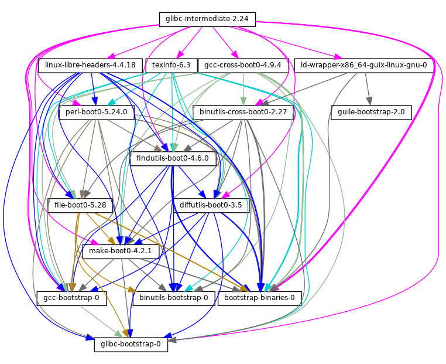

Previous: Reduced Binary Seed Bootstrap, Up: Bootstrapping [Contents][Index]
The figure above shows the very beginning of the dependency graph of the
distribution, corresponding to the package definitions of the (gnu
packages bootstrap) module. A similar figure can be generated with
guix graph (see Invoking guix graph), along the lines of:
guix graph -t derivation \ -e '(@@ (gnu packages bootstrap) %bootstrap-gcc)' \ | dot -Tps > gcc.ps
or, for the further Reduced Binary Seed bootstrap
guix graph -t derivation \ -e '(@@ (gnu packages bootstrap) %bootstrap-mes)' \ | dot -Tps > mes.ps
At this level of detail, things are
slightly complex. First, Guile itself consists of an ELF executable,
along with many source and compiled Scheme files that are dynamically
loaded when it runs. This gets stored in the guile-2.0.7.tar.xz
tarball shown in this graph. This tarball is part of Guix’s “source”
distribution, and gets inserted into the store with add-to-store
(see The Store).
But how do we write a derivation that unpacks this tarball and adds it
to the store? To solve this problem, the guile-bootstrap-2.0.drv
derivation—the first one that gets built—uses bash as its
builder, which runs build-bootstrap-guile.sh, which in turn calls
tar to unpack the tarball. Thus, bash, tar,
xz, and mkdir are statically-linked binaries, also part of
the Guix source distribution, whose sole purpose is to allow the Guile
tarball to be unpacked.
Once guile-bootstrap-2.0.drv is built, we have a functioning
Guile that can be used to run subsequent build programs. Its first task
is to download tarballs containing the other pre-built binaries—this
is what the .tar.xz.drv derivations do. Guix modules such as
ftp-client.scm are used for this purpose. The
module-import.drv derivations import those modules in a directory
in the store, using the original layout. The
module-import-compiled.drv derivations compile those modules, and
write them in an output directory with the right layout. This
corresponds to the #:modules argument of
build-expression->derivation (see Derivations).
Finally, the various tarballs are unpacked by the derivations
gcc-bootstrap-0.drv, glibc-bootstrap-0.drv, or
bootstrap-mes-0.drv and bootstrap-mescc-tools-0.drv, at which
point we have a working C tool chain.
Bootstrapping is complete when we have a full tool chain that does not
depend on the pre-built bootstrap tools discussed above. This
no-dependency requirement is verified by checking whether the files of
the final tool chain contain references to the /gnu/store
directories of the bootstrap inputs. The process that leads to this
“final” tool chain is described by the package definitions found in
the (gnu packages commencement) module.
The guix graph command allows us to “zoom out” compared to
the graph above, by looking at the level of package objects instead of
individual derivations—remember that a package may translate to
several derivations, typically one derivation to download its source,
one to build the Guile modules it needs, and one to actually build the
package from source. The command:
guix graph -t bag \
-e '(@@ (gnu packages commencement)
glibc-final-with-bootstrap-bash)' | xdot -
displays the dependency graph leading to the “final” C library39, depicted below.
The first tool that gets built with the bootstrap binaries is
GNU Make—noted make-boot0 above—which is a prerequisite
for all the following packages. From there Findutils and Diffutils get
built.
Then come the first-stage Binutils and GCC, built as pseudo cross tools—i.e., with --target equal to --host. They are used to build libc. Thanks to this cross-build trick, this libc is guaranteed not to hold any reference to the initial tool chain.
From there the final Binutils and GCC (not shown above) are built. GCC
uses ld from the final Binutils, and links programs against
the just-built libc. This tool chain is used to build the other
packages used by Guix and by the GNU Build System: Guile, Bash,
Coreutils, etc.
And voilà! At this point we have the complete set of build tools that
the GNU Build System expects. These are in the %final-inputs
variable of the (gnu packages commencement) module, and are
implicitly used by any package that uses gnu-build-system
(see gnu-build-system).
Because the final tool chain does not depend on the bootstrap binaries,
those rarely need to be updated. Nevertheless, it is useful to have an
automated way to produce them, should an update occur, and this is what
the (gnu packages make-bootstrap) module provides.
The following command builds the tarballs containing the bootstrap binaries (Binutils, GCC, glibc, for the traditional bootstrap and linux-libre-headers, bootstrap-mescc-tools, bootstrap-mes for the Reduced Binary Seed bootstrap, and Guile, and a tarball containing a mixture of Coreutils and other basic command-line tools):
guix build bootstrap-tarballs
The generated tarballs are those that should be referred to in the
(gnu packages bootstrap) module mentioned at the beginning of
this section.
Still here? Then perhaps by now you’ve started to wonder: when do we reach a fixed point? That is an interesting question! The answer is unknown, but if you would like to investigate further (and have significant computational and storage resources to do so), then let us know.
Our traditional bootstrap includes GCC, GNU Libc, Guile, etc. That’s a lot of binary code! Why is that a problem? It’s a problem because these big chunks of binary code are practically non-auditable, which makes it hard to establish what source code produced them. Every unauditable binary also leaves us vulnerable to compiler backdoors as described by Ken Thompson in the 1984 paper Reflections on Trusting Trust.
This is mitigated by the fact that our bootstrap binaries were generated from an earlier Guix revision. Nevertheless it lacks the level of transparency that we get in the rest of the package dependency graph, where Guix always gives us a source-to-binary mapping. Thus, our goal is to reduce the set of bootstrap binaries to the bare minimum.
The Bootstrappable.org web site lists on-going projects to do that. One of these is about replacing the bootstrap GCC with a sequence of assemblers, interpreters, and compilers of increasing complexity, which could be built from source starting from a simple and auditable assembler.
Our first major achievement is the replacement of of GCC, the GNU C Library and Binutils by MesCC-Tools (a simple hex linker and macro assembler) and Mes (see GNU Mes Reference Manual in GNU Mes, a Scheme interpreter and C compiler in Scheme). Neither MesCC-Tools nor Mes can be fully bootstrapped yet and thus we inject them as binary seeds. We call this the Reduced Binary Seed bootstrap, as it has halved the size of our bootstrap binaries! Also, it has eliminated the C compiler binary; i686-linux and x86_64-linux Guix packages are now bootstrapped without any binary C compiler.
Work is ongoing to make MesCC-Tools and Mes fully bootstrappable and we are also looking at any other bootstrap binaries. Your help is welcome!
You may notice the glibc-intermediate label,
suggesting that it is not quite final, but as a good
approximation, we will consider it final.
Previous: Reduced Binary Seed Bootstrap, Up: Bootstrapping [Contents][Index]